You were in the midst of a tour when the coronavirus basically
brought everything to a halt. How are you doing right now?
It’s been wild, yet a really amazing time for me personally.
I didn’t even know how badly I needed this course correction.
It feels like exactly where I’m supposed to be and exactly
what I’m supposed to be doing and it’s all exactly the
opposite of what I had planned.
I know you are in Wales right now. Is that just where you happened
to be when this all went down?
No. I was in America. I was in the middle of a West Coast tour
when everything started really kicking off. My sweetheart lives
here in Wales and the plan was for us to both be on tour right now
in Europe. If none of this had happened, I would have flown over
here and we would have gotten in a van and then been on the road
for the foreseeable future. But as the travel ban started kicking
in and everything, it seemed less and less likely that I could
get over here if I waited that long. So I just changed my flight
and came over sooner just to make sure that we wouldn’t be locked
out of each other’s countries and we could at least be together.
You have multiple practices in addition to being a musician—plant
medicines, reiki healing, the tarot. How do all of those things
inform your creative practice as a musician?
To me there’s never really been clear delineations, and I think
I suffered when I tried to fit myself into those convenient little
boxes that society wants us to conform to. I think I just always
identified as an artist but practiced many mediums within that
broad umbrella. And then even beyond that, just thinking of
life as an art form and a creative act—every day is practicing
some kind of art, like cooking and farming and painting.
Everything is in everything. To me it’s all about just finding
harmony and balance and creating beauty. The healing practice came
in later in life as a central focus that I have incorporated into my
art practice. The main intention of anything that I do is about
healing. Finding harmony and balance, helping others guide their
consciousness and their systems into a state of greater harmony
and balance—that’s what I think great art can do. Sometimes that
includes being a provocateur and agitating things and stirring the
pot and mixing things up so that healing can happen, because
stagnation is always the ultimate enemy.
I think it’s interesting to think about healing or intentionality
as a driving force behind creative work. To ask yourself whenever
you make something: Who is this for? And what is this for?
That framework has really helped me feel like my artistic practice
is in keeping with my larger core values, that it has the same
integrity. I think when I was younger, I spun around in this
self-defeating thought loop always asking myself, “Is this just
masturbatory? Am I just being narcissistic? Do I just want to
be famous?” It’s such a mind fuck, all of it. The culture of
celebrity that has formed around art and artists is a lot to
contend with and make sense of. Just stepping to the side of all
that a little bit and finding my own moral compass was
important. It felt better to think of my intention as
creating medicine in some way for the ailing collective
consciousness… and also just for myself.
That has been the ultimate compass—just listening to my body and
recognizing when I’m having a reaction, either positive or negative,
to an opportunity that comes up or an individual person or just a
general trajectory. It’s like, “How am I feeling? What is my body
telling me? Am I really stressed? Do I feel joyful? Am I getting
headaches? Is my skin breaking out in some weird rash?” We get
so much information given to us all the time, but if we can slow
it down and listen, we can learn so much. It is so interesting
just how much that’s coming up loud and clear right now for
everybody. Despite how terrible it is, right now is this huge
opportunity to pause and listen and reflect and hopefully
redirect some of our collective energies in more positive ways.
I think that is what has made this moment so painful for so many
people. Aside from the financial chaos and loss of life, I think it’s
hard for us to sit still—to be alone and quiet with our own
thoughts—and being forced to stay put and really take stock of
things has really been hard for people. We’re so accustomed to
always being distracted from that kind of thinking.
Yeah. It’s so hard, but ultimately it can be a kind of gift.
As it turns out, so many of the things that we do to distract
ourselves from ever having to sit still and be quiet are also
all the things that are destroying the planet. Especially with
travel. I’ve been thinking a lot about that because honestly
it’s weighed on me for quite some time as a touring musician,
living with the hypocrisy of identifying as a healer and telling
myself that I’m on this mission to be of service to nature and
the world, but then on some basic plane of reality I’m traveling
vast distances everyday burning fossil fuels and flying around
the world peddling little pieces of plastic. For a long time
that’s really not sat well with me. So right now I’ve been trying
to think about other ways to do what I love and share my music
and be of service that don’t involve still doing that.
Honestly, it took this pandemic for me to actually stop and step back
and realize, “Whoa. I actually don’t have to do that.” The
constant touring was actually making me really sick and tired
and sad and lonely and my body was having one of those reactions
that I was talking about earlier. On my last tour I was
having low-grade panic attacks every day and constant
headaches. I just felt so tired and I was already kind
of resigned to it, like “Fuck. I’m about to be doing this
nonstop for the foreseeable future.” There was no real end
in sight to my infinite tour. And then this happened and,
like everyone else, I had to stop. I didn’t even realize
how much relief I would feel when I didn’t have to do that
anymore.
So yes… this has been wild. But I think no matter what you’re
doing in the world, there are these massive systems that we’re
all complicit in and have grown so accustomed to and dependent
on that we think we need them and that we need to keep feeding
into them. So for me, this is such an amazing moment to stop
and think, “Oh, what if actually we could just stop and do
something else?”
I know it’s different for everyone and that not everyone has
the luxury of simply stopping what they do or what they need to
do in order to make a living, but as a musician, how do you think
you’ll do things differently after this?
I don’t know yet. I think the touring thing is definitely insane
and my body was giving me pretty clear signs that it was not going
to work for me for very much longer anyway. It’s really just a
capitalistic trap because you’re not making any money from album
sales or streaming if you don’t tour, so if you want to be a
full-time professional musician and not have a day job, then
you have to be on the road a lot.
It’s ultimately pretty thankless because you tour your ass off
just to basically break even. You make enough to live and then
come home and have *maybe *gotten out of debt to your label at
the end of a brutal year, or maybe not even that. So, I don’t
know. I think maybe for me what I’m looking at is settling down,
building out a nice little modest home studio, and just having
more time to write and record more and release things more
quickly and on my own terms and have the modest streaming
royalties coming in be enough to cover my minimal living
expenses. But even then, I don’t know that it would be
enough.
I love farming and gardening and working with plants and that’s
been something that I have known about myself for a long time. That
is when I’m happiest and feel the most sane and healthy and
balanced—when I have my hands in the dirt and I’m growing my own
food and just working really closely with the seasons. I didn’t
even realize consciously how far I have strayed from that, how
long it had been since I’ve been in a setting where I could do
that.
I’ve been living in Los Angeles for almost a year working on a
movie and I’d gotten sucked in pretty deep into the matrix of chasing
fame and increasingly superficial concerns. Right now I’m feeling
really good about where I’m at, looking at a homesteading path of
just having a low overhead and not needing to make a lot of money
because I’m mostly being self-sufficient. This also means playing
music because it brings me joy, but not being a slave to my own
art as I feel I have been, not punishing myself in order to do
the thing that I allegedly love because then that makes me not
love it. It makes me resent it and not want to do it and just
feel like I have this fucking chain around my neck, which
is just the opposite of how I want to feel about it.
I think for anybody who tries to make a living off of their art,
that’s something that you have to figure out—what your stance is
going to be about selling your work and how much you allow that
to change your relationship with it.
Yeah. It just all reduces down to this industrial, assembly-line
mentality that we’ve all grown up with where we’re not encouraged
to be fully rounded holistic beings. We’re supposed to specialize
really early, get really good at one thing, and just do it into
the ground for the rest of our lives. And that’s not healthy. We
see it in agriculture, when you’re just planting the same GMO
crop season after season in the same place, eventually you deplete
the soil. You’ve got to rotate the crops and restore the soil
and give it a rest and live with the seasons.
You’ve got to know when it’s time to plant and when it’s time
to harvest and when it’s time to chill. And we just haven’t given
ourselves the opportunity to live that way. It’s just a world lit
by electric lights and we’re supposed to be incessantly productive
with no breaks.
This seems to be a moment when a lot of people are thinking about
getting healthy and changing their habits. For people who maybe
don’t know anything at all about plant healing or Reiki, what kind
of advice do you have? Where is a good place to start?
Well, I think plants are my allies and they always have been. I
love encouraging people to look back to who they were as children
and how they inherently knew how to interact with the world,
to think about what excited them and what magic felt like.
I think of plants as a very powerful kingdom of natural living
things that we have co-evolved with and, over time, have
forgotten how to have a rapport with.
You can say the same thing about rocks. I know a lot of people
who are really into crystals and crystal healing, but for some
reason I don’t feel like I speak that language as fluently. I can
appreciate it, but it’s not my chosen language. And some people
really enjoy astrology and some people are really into Tarot.
Basically there are all kinds of entry points to a deepened
understanding of the matrix of interdimensional consciousness
that we’re all swimming in. I think it’s just a matter of
finding what excites you and what feels really juicy and
magnetic and thrilling and magical. Herbalism just happens
to be my main field of knowledge.
I suggest to people the method of selecting one plant ally that
feels like someone you want to get to know or maybe a small
handful of plants because there’s so many plants. This can be
said of anything. If someone wanted to get into listening to
music for the first time, well, there’s a ton of bands, so just
pick one that you like and listen to their records and get
familiar with their sound. Same goes with plants. You could
spend your whole life learning about herbalism and never
run out of things to learn. I say just pick a few plants
and go really deep with them—and not just reading about
them in books, but actually growing a live plant in your
window sill, so you get to sit and smell the leaves and be
in their energetic fields and get to know exactly what
they look like at different growing stages and what they
smell like and what they taste like. You can learn so
much.
I know things are a little bit limited right now in terms of
accessibility and even ordering things online is hard, but I’d say
just work with what you’ve got even if you have an essential oil
in your cabinet, making a meditation out of that could be really
nice. Or if you have some dried rosemary in your cabinet. I’m
sure that everyone has some bit of plant matter around, or even
a house plant that’s not edible or necessarily medicinal, so just
meditating with a plant and touching its leaves, just hanging
out and really listening in a meditative state, just sitting
with a plant and just looking carefully, looking at how it
grows, can be a healthy, healing thing.
I think one of the biggest things that I get out of hanging out
with plants is that they are these metaphorical, symbolic reminders
of how to be. They’re older than us and they’re so adapted to life
on earth and they are so benevolent to us. They create oxygen.
They have all these amazing properties that can bring our bodies
into greater states of balance. So, if we can spend time just
observing them and smelling them and inviting them into our
awareness, that’s a really good starting place to being healthy.
You’ve just released your fifth solo record. Do you find that
your process, or what music-making means to you, has shifted
radically over the years?
For sure. Yeah. I’ve got five solo albums and then two albums
before that with a band where I was actually the songwriter, too.
So it’s been a long journey. Looking back to that early work,
I feel like a completely different person. And I think because of
the healing journey that I’ve been on, and really with spending
so much time with plant consciousness, it has totally exploded
my brain. I feel music in such a different way—just experiencing
it as energy and light and color and healing. I think everything
can be reduced to vibration and music is such a potent way to
affect matter that way.
Now music is also about feeling that vibration in my body,
spending time in nature or in meditation, and just experimenting
with moving the tone of my voice through different parts of my
body and feeling how it resonates with the different things
going on inside me. When I have a headache now it’s an
opportunity to practice this. If I have a migraine, I’ll
get in a bath and cover my ears with water and just sing
a note and move the pitch around until I feel it resonate
with the pain in my head. It’s like the way opera singers
can shatter glass with their voices. I’m thinking of the migraine
as the pane of glass and I’m dialing in the pitch of my voice
until I feel like I can break up that cluster.
So yeah, that’s where my mind has gone with music. Healing has emerged
as my highest creative excitement. I know I’m doing music right when
it feels like a healing practice. And that’s not to say that I’m always
there. I can still get really easily sucked into more ego-centric
pursuits with it and I get performance anxiety and get very nervous
about how I’m being perceived and if I’m doing it right, but
I know how I want to feel with it, which is that it is a personal
healing practice. And when I’m really living that and embodying it,
then sharing it with others is also a healing offering.
That’s a beautiful way to think about creative work.
I was taking a walk earlier today and just thinking about
what angle I could offer you, because I knew I wanted to talk
about plant medicine and I was just thinking, “What do I want
to say about that broadly?” And I just had this really funny
thought that I hadn’t really considered before.
Two years ago I went on this massive tour all around the US.
I played like 75 shows or something stupid like that in three
months. I called it the plant medicine tour because everywhere
I went I was lining up with local farmers and herbalists to be
at the shows selling their medicines and talking to their
communities about what they were doing, which was beautiful.
But the irony was that I had called it the “plant medicine
tour.” and I ended up getting really sick on it. I came down
with a really brutal case of strep throat that triggered a
gnarly case of Epstein-Barr, which is a virus. It completely
took me out. I was passing out in public and just so exhausted.
I somehow pushed my way through it and I made it to the end
of the tour. I was driving myself from show to show and I
pushed just beyond, beyond, beyond what I should have. At
the end of it, I had to basically quit life for three months
and just do nothing but sleep and drink tea and recover.
So today I was just thinking, “Wow. It’s so beautiful that on
that healing tour I made myself so sick that it ultimately led
to my deepened understanding of healing.” Today, standing here
in Wales, it kind of feels like that again—a virus has forced
me to radically change my plans and rethink everything. And
both times the message has been, “Slow down. Just stop trying
so hard. Stop forcing it. Life doesn’t have to be an
exhausting crusade.”



